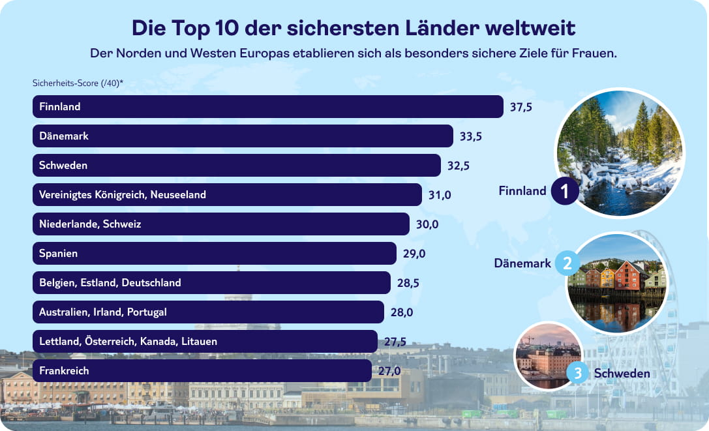
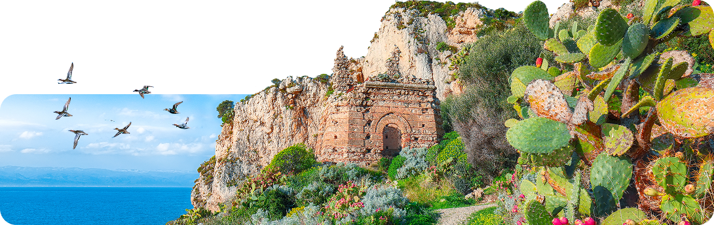

Wer an Inselurlaub denkt, spürt mehr als nur Sonne und Sand: das Gefühl, dem Alltag den Rücken zu kehren, begleitet vom Rauschen der Wellen, einer frischen Brise und dem Versprechen unter Palmen, neue Dinge zu entdecken. Für dieses Inselerlebnis musst du nicht mal ans andere Ende der Welt reisen: Egal, ob du lieber durch grüne Täler wanderst, entlang schroffer Küstenpfade spazierst oder dich von kleinen Tavernen, Wochenmärkten und dem entspannten Inselleben treiben lässt – Europas Inselwelt ist so vielseitig wie die Menschen, die sie bereisen.
Genau diese Vielfalt zeigen wir im großen TUI Insel-Ranking: mit 75 Insel-Destinationen, die direkt Lust machen, den nächsten Urlaub im Kopf zu planen. Lass dich inspirieren und entdecke die europäische Insel, die am besten zu dir und deinen Urlaubsvorlieben passt.
75 Inseln im Vergleich: Die besten Orte für Sonne, Strand und Sundowner
Das TUI Insel-Ranking 2026 ist dein Kompass durch Europas Inselwelt: Auf einen Blick siehst du, wo Sonnenuntergänge so eindrucksvoll sind, dass sie bereits millionenfach auf Instagram geteilt wurden, wo dich die meisten ausgezeichneten Strände erwarten und welche Ziele mit Wasserparks, Beach Bars und jeder Menge Outdoor-Erlebnissen punkten. Ob du also nach entspanntem Insel-Vibe suchst, nach Action auf dem Wasser oder nach dem perfekten Mix aus Genuss, Natur und Nightlife:Die Kriterien helfen dir dabei, genau die Destination zu finden, die zu deinem Urlaubsstil passt.
Tipp: Klickst du im Ranking ein Kriterium an, kannst du die
Inseln außerdem gezielt nach deinem Fokus sortieren.

Das große TUI Insel-Ranking: 75 Top-Destinationen
Für das TUI Insel-Ranking 2026 haben wir 75 europäische Insel-Destinationen berücksichtigt, die genügend verlässliche Daten für unsere Kategorien liefern. Sehr große Inselstaaten (wie zum Beispiel Großbritannien) wurden bewusst ausgeklammert, um vergleichbar zu bleiben. Nord- und Ostseeinseln sind dagegen als spannende Nahziele mit dabei. Die Werte im Index stammen aus einer Mischung aus internationalen Reports und öffentlich verfügbaren Datenquellen: Der World Happiness Score orientiert sich am World Happiness Report, Blue-Flag-Strände an der internationalen Blue-Flag-Auszeichnung. Infrastruktur- und Lifestyle-Kategorien wie Wasserparks, Bars sowie Surf-/Wassersport-Schulen wurden über Einträge auf Google Maps erfasst, Outdoor-Aktivitäten anhand der gelisteten Angebote auf Tripadvisor. Für den Social Sunset Score haben wir die Instagram-Hashtag-Kombination „#[Inselname] #sunset“ ausgewertet. Ergänzend fließt ein KI-gestützter Paradise Score ein, der den Gesamteindruck einer Insel (u. a. Natur, Ästhetik, Ruhe, Vibe, Infrastruktur und Reisezeit-Aspekte) heuristisch bündelt.
*Aufgrund der Lage innerhalb Deutschlands mit voller Punktzahl bewertet

Sicher solo unterwegs: Europa bietet attraktive Ziele für alleinreisende Frauen
Wer den Sicherheitsaspekt in den Mittelpunkt stellt, sieht schnell, dass sich das Ranking im Vergleich zur Gesamtwertung leicht verschiebt: Skandinavien bleibt beim Sicherheits‑Score stabil an der Spitze, dahinter holen zahlreiche europäische Länder auf. Das Vereinigte Königreich, Neuseeland, die Schweiz und die Niederlande rücken auf die vorderen Plätze und unterstreichen, wie attraktiv diese Ziele für alleinreisende Frauen mit erhöhtem Sicherheitsbedürfnis sind.
Grundlage des Solo Female Travel Index 2026 ist eine Analyse von über 150 Ländern anhand von neun Kategorien. Zur Sicherung der Datenqualität wurden Länder mit unzureichenden Informationen und (Teil-)Reisewarnungen des Auswärtigen Amtes (Stand: Januar 2026) ausgeschlossen. Die einzelnen Kategorien wurden zusätzlich durch eine Gewichtung in ein geeignetes Verhältnis gebracht. Für das separate Sicherheitsranking wurden aus diesen neun Kategorien ausschließlich der Women, Peace & Security Index 2025/26, das subjektive Sicherheitsgefühl nachts sowie die Geschlechterparität herangezogen.

Komfort & Konnektivität: Wo das Reisen am leichtesten fällt
Wer alleine reist, weiß: Eine gut ausgebaute Infrastruktur kann den Unterschied machen und ein entspanntes Reiseerlebnis schaffen. In diesem Teilranking stehen daher im Vordergrund, wie unkompliziert sich ein Land alleine bereisen lässt – gemessen an Englischkenntnissen, ÖPNV‑Qualität sowie typischen Kosten für Taxi und Unterkunft.
An der Spitze liegt Finnland, gefolgt von Polen und den Niederlanden , die vor allem mit guten Englischkenntnissen und einer verlässlichen, gut bewerteten ÖPNV‑Infrastruktur punkten. Dahinter positionieren sich Südkorea und Schweden , während Kanada, Österreich und Malaysia mit einem guten Mix aus Verständlichkeit im Alltag, akzeptablen Preisen und funktionierendem Verkehrsnetz überzeugen – Ziele, in denen ein Solo‑Trip dank reibungsloser Logistik und einfacher Orientierung besonders leicht fällt.

Grundlage des Solo Female Travel Index 2026 ist eine Analyse von über 150 Ländern anhand von neun Kategorien. Zur Sicherung der Datenqualität wurden Länder mit unzureichenden Informationen sowie Staaten mit (Teil-)Reisewarnungen des Auswärtigen Amtes (Stand: Januar 2026) ausgeschlossen. Die einzelnen Kategorien wurden zusätzlich durch eine Gewichtung in ein geeignetes Verhältnis gebracht. Für den Teilbereich „Reiseerlebnis“ wurden aus diesen neun Kategorien ausschließlich Englischkenntnisse der Bevölkerung, Qualität des öffentlichen Nahverkehrs sowie durchschnittliche Taxi- und Unterkunftskosten herangezogen.
Selbstbestimmt & sicher: Reiseziele mit guter medizinischer Versorgung
Ein dichtes medizinisches Netz ist für alleinreisende Frauen ein wesentlicher Komfortfaktor. Es geht um das beruhigende Wissen, im Bedarfsfall sofort professionelle Hilfe zu finden – sei es bei sportlichen Verletzungen, akuten Beschwerden oder dem schnellen Zugang zur „Pille danach“. Auch für Frauen, die während einer Schwangerschaft reisen, bietet eine hohe Ärztedichte die nötige Sicherheit für eine verlässliche Vorsorge vor Ort. Eine exzellente Infrastruktur schafft so die Freiheit und Souveränität, sich als Frau voll und ganz auf das Reiseerlebnis einlassen zu können.
An der Spitze dieses Rankings stehen Griechenland und Belgien, gefolgt von Litauen, Portugal, Georgien und Österreich, die allesamt eine hohe Ärztedichte pro 10.000 Einwohner und einen rezeptfreien Zugang zur „Pille danach“ bieten.
Die folgende Heatmap zeigt: Je intensiver die Farbe, desto unkomplizierter und schneller ist die medizinische Versorgung vor Ort garantiert.
Medical Travel Heat Map 2026

5 Tipps für deine erste Solo-Reise
Du planst deine allererste Solo-Reise und bist ein wenig nervös? Kein Grund zur Sorge, mit einer einfachen Vorbereitung wird dein Urlaub zu einem unvergesslichen Erlebnis. Wir geben dir im Folgenden fünf wichtige Tipps, die du im Rahmen der Urlaubsvorbereitung einfach beachten solltest.

Fazit: In Deinem Tempo um die Welt
Ohne Begleitung zu verreisen, hört sich für viele Frauen verlockend an – die Wahl der geeigneten Destination kann dabei jedoch zur Herausforderung werden. Der TUI Solo Female Travel Index hilft dabei, Dir einen Überblick über die besten Urlaubsländer für alleinreisende Frauen zu verschaffen. Wir sind uns sicher: Mit der richtigen Vorbereitung wird Deine erste Solo-Reise sicherlich zu einem grandiosen Erfolg.
Quellen:
TUI-Studie 2026
“Global Gender Gap Report 2025” des World Economic Forum: www.weforum.org/publications/global-gender-gap-report-2025/